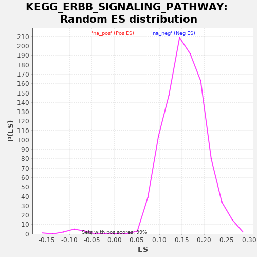

| | | Dataset | drug_embeddings_gsea |
| Phenotype | NoPhenotypeAvailable |
| Upregulated in class | na_neg |
| GeneSet | KEGG_ERBB_SIGNALING_PATHWAY |
| Enrichment Score (ES) | -0.52896947 |
| Normalized Enrichment Score (NES) | -5.727894 |
| Nominal p-value | 0.0 |
| FDR q-value | 0.0 |
| FWER p-Value | 0.0 |
Table: GSEA Results Summary
 Fig 1: Enrichment plot: KEGG_ERBB_SIGNALING_PATHWAY
Fig 1: Enrichment plot: KEGG_ERBB_SIGNALING_PATHWAY
Profile of the Running ES Score & Positions of GeneSet Members on the Rank Ordered List
| PROBE | GENE SYMBOL | GENE_TITLE | RANK IN GENE LIST | RANK METRIC SCORE | RUNNING ES | CORE ENRICHMENT | | 1 | CAMK2B | | | 5208 | 0.880 | -0.3343 | No |
| 2 | EREG | | | 6516 | 0.814 | -0.4032 | No |
| 3 | NRG4 | | | 6749 | 0.803 | -0.3989 | No |
| 4 | PIK3R5 | | | 7260 | 0.776 | -0.4143 | No |
| 5 | NRG3 | | | 7563 | 0.759 | -0.4160 | No |
| 6 | SHC4 | | | 8929 | 0.681 | -0.4923 | No |
| 7 | CAMK2G | | | 9051 | 0.674 | -0.4836 | No |
| 8 | NRG2 | | | 9540 | 0.642 | -0.5009 | No |
| 9 | PAK3 | | | 9541 | 0.642 | -0.4847 | No |
| 10 | PAK6 | | | 9791 | 0.625 | -0.4861 | No |
| 11 | SOS2 | | | 9840 | 0.622 | -0.4737 | No |
| 12 | CBLC | | | 10429 | 0.589 | -0.4992 | No |
| 13 | MAP2K4 | | | 10564 | 0.587 | -0.4936 | No |
| 14 | PAK4 | | | 11082 | 0.578 | -0.5144 | Yes |
| 15 | AKT3 | | | 11209 | 0.576 | -0.5086 | Yes |
| 16 | PIK3CD | | | 11299 | 0.574 | -0.5003 | Yes |
| 17 | CAMK2D | | | 11480 | 0.571 | -0.4982 | Yes |
| 18 | PIK3CG | | | 11617 | 0.568 | -0.4933 | Yes |
| 19 | TGFA | | | 11798 | 0.565 | -0.4914 | Yes |
| 20 | PIK3CB | | | 11808 | 0.564 | -0.4778 | Yes |
| 21 | CAMK2A | | | 11862 | 0.563 | -0.4673 | Yes |
| 22 | HBEGF | | | 12309 | 0.552 | -0.4840 | Yes |
| 23 | SOS1 | | | 12466 | 0.549 | -0.4809 | Yes |
| 24 | RPS6KB2 | | | 12618 | 0.544 | -0.4776 | Yes |
| 25 | EGF | | | 12663 | 0.543 | -0.4669 | Yes |
| 26 | NRAS | | | 12693 | 0.541 | -0.4553 | Yes |
| 27 | MAP2K7 | | | 12723 | 0.541 | -0.4437 | Yes |
| 28 | EIF4EBP1 | | | 12978 | 0.531 | -0.4478 | Yes |
| 29 | SHC2 | | | 13026 | 0.529 | -0.4377 | Yes |
| 30 | PLCG2 | | | 13114 | 0.526 | -0.4304 | Yes |
| 31 | ARAF | | | 13137 | 0.525 | -0.4188 | Yes |
| 32 | MAPK10 | | | 13440 | 0.511 | -0.4266 | Yes |
| 33 | SHC3 | | | 13464 | 0.509 | -0.4154 | Yes |
| 34 | BTC | | | 13492 | 0.507 | -0.4045 | Yes |
| 35 | NCK2 | | | 13536 | 0.504 | -0.3948 | Yes |
| 36 | ELK1 | | | 13540 | 0.504 | -0.3823 | Yes |
| 37 | PAK1 | | | 13591 | 0.500 | -0.3732 | Yes |
| 38 | PRKCG | | | 13617 | 0.499 | -0.3624 | Yes |
| 39 | CBLB | | | 13633 | 0.498 | -0.3509 | Yes |
| 40 | MAP2K2 | | | 13634 | 0.498 | -0.3384 | Yes |
| 41 | PIK3CA | | | 13636 | 0.498 | -0.3260 | Yes |
| 42 | PAK2 | | | 13719 | 0.492 | -0.3192 | Yes |
| 43 | ABL2 | | | 13802 | 0.486 | -0.3126 | Yes |
| 44 | NRG1 | | | 13831 | 0.483 | -0.3024 | Yes |
| 45 | STAT5B | | | 13832 | 0.483 | -0.2903 | Yes |
| 46 | AKT2 | | | 13873 | 0.480 | -0.2809 | Yes |
| 47 | PLCG1 | | | 13876 | 0.480 | -0.2690 | Yes |
| 48 | PIK3R3 | | | 13963 | 0.471 | -0.2631 | Yes |
| 49 | PIK3R2 | | | 13979 | 0.469 | -0.2523 | Yes |
| 50 | BRAF | | | 14075 | 0.460 | -0.2473 | Yes |
| 51 | CDKN1B | | | 14079 | 0.459 | -0.2360 | Yes |
| 52 | HRAS | | | 14175 | 0.445 | -0.2313 | Yes |
| 53 | PRKCB | | | 14202 | 0.441 | -0.2220 | Yes |
| 54 | MTOR | | | 14207 | 0.440 | -0.2112 | Yes |
| 55 | BAD | | | 14218 | 0.438 | -0.2009 | Yes |
| 56 | NCK1 | | | 14279 | 0.427 | -0.1943 | Yes |
| 57 | ERBB4 | | | 14347 | 0.414 | -0.1885 | Yes |
| 58 | STAT5A | | | 14377 | 0.407 | -0.1803 | Yes |
| 59 | MAPK9 | | | 14388 | 0.405 | -0.1708 | Yes |
| 60 | PTK2 | | | 14395 | 0.403 | -0.1611 | Yes |
| 61 | RPS6KB1 | | | 14398 | 0.402 | -0.1511 | Yes |
| 62 | KRAS | | | 14429 | 0.393 | -0.1433 | Yes |
| 63 | CRKL | | | 14446 | 0.386 | -0.1347 | Yes |
| 64 | SHC1 | | | 14470 | 0.375 | -0.1269 | Yes |
| 65 | MAPK3 | | | 14476 | 0.370 | -0.1179 | Yes |
| 66 | PIK3R1 | | | 14486 | 0.366 | -0.1094 | Yes |
| 67 | GSK3B | | | 14490 | 0.364 | -0.1004 | Yes |
| 68 | RAF1 | | | 14562 | 0.357 | -0.0963 | Yes |
| 69 | MAP2K1 | | | 14579 | 0.351 | -0.0886 | Yes |
| 70 | CRK | | | 14581 | 0.349 | -0.0799 | Yes |
| 71 | CDKN1A | | | 14608 | 0.333 | -0.0733 | Yes |
| 72 | PRKCA | | | 14622 | 0.321 | -0.0662 | Yes |
| 73 | CBL | | | 14633 | 0.306 | -0.0591 | Yes |
| 74 | ABL1 | | | 14634 | 0.306 | -0.0515 | Yes |
| 75 | MAPK8 | | | 14643 | 0.298 | -0.0445 | Yes |
| 76 | ERBB2 | | | 14648 | 0.293 | -0.0374 | Yes |
| 77 | ERBB3 | | | 14650 | 0.292 | -0.0302 | Yes |
| 78 | SRC | | | 14660 | 0.271 | -0.0240 | Yes |
| 79 | MAPK1 | | | 14666 | 0.254 | -0.0180 | Yes |
| 80 | AKT1 | | | 14676 | 0.227 | -0.0129 | Yes |
| 81 | GRB2 | | | 14682 | 0.197 | -0.0083 | Yes |
| 82 | JUN | | | 14687 | 0.176 | -0.0041 | Yes |
| 83 | MYC | | | 14692 | 0.134 | -0.0010 | Yes |
| 84 | EGFR | | | 14695 | 0.054 | 0.0002 | Yes |
Table: GSEA details [plain text format]

Fig 2: KEGG_ERBB_SIGNALING_PATHWAY: Random ES distribution
Gene set null distribution of ES for KEGG_ERBB_SIGNALING_PATHWAY